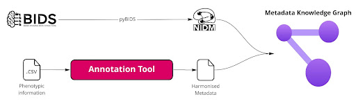

Overview
The goal of Neurobagel is to make describing and finding neuroimaging data easy. Searching across data that live on distributed storage systems is tricky, and the technologies that make it possible are not usually something researchers have experience with, or time to learn.
We build web-based, graphical user interfaces that make these steps easier:
- Annotate and harmonize phenotypic data
- Define and find subject-level cohort across neuroimaging datasets
These tools are still in early development but we are excited to share them with the neuroimaging community and are always looking for feedback.
Take a look at our neurobagel github repositories and our roadmap below to get a sense of what we are doing at the moment!